<title>UNIVERSITY — Anaëlle Clef</title>
<style>
:root{
  --paper:#EDEBE6;--ink:#111110;--line:rgba(17,17,16,.13);
  --line-strong:rgba(17,17,16,.28);--mute:#6E6E68;--body:#2b2b28;
  color-scheme:light;
}
*{box-sizing:border-box;}
html,body{margin:0;padding:0;background:var(--paper);color:var(--ink);overflow-x:hidden;max-width:100%;}
body{font-family:"Helvetica Neue",Helvetica,Arial,sans-serif;-webkit-font-smoothing:antialiased;font-size:16px;line-height:1.45;}
a{color:inherit;text-decoration:none;}
.u-label{font-size:11px;letter-spacing:.22em;text-transform:uppercase;font-weight:700;}
.u-mute{color:var(--mute);}
/* nav */
.nav{display:flex;align-items:flex-start;justify-content:space-between;padding:26px clamp(20px,3.2vw,52px);border-bottom:1px solid var(--line);}
.brand b{font-size:19px;font-weight:800;letter-spacing:-.01em;display:block;}
.brand span{font-size:10.5px;letter-spacing:.24em;text-transform:uppercase;color:var(--mute);}
.navlinks{display:flex;gap:22px;align-items:center;padding-top:5px;}
.navlinks a{font-size:13px;position:relative;}
.navlinks a::after{content:"";position:absolute;left:0;right:100%;bottom:-4px;height:1px;background:var(--ink);transition:right .3s ease;}
.navlinks a:hover::after{right:0;}
.navmark{width:9px;height:9px;background:var(--ink);margin-top:6px;}
/* project header */
.phead{padding:clamp(40px,7vw,100px) clamp(20px,3.2vw,52px) clamp(28px,3vw,44px);border-bottom:1px solid var(--ink);}
.phead .kick{display:flex;justify-content:space-between;color:var(--mute);margin-bottom:clamp(24px,4vw,54px);}
.ptitle{margin:0;font-size:clamp(40px,12vw,168px);font-weight:800;letter-spacing:-.04em;line-height:.86;overflow-wrap:break-word;max-width:100%;}
.plede{margin:20px 0 0;max-width:30ch;font-size:clamp(18px,2.4vw,30px);font-weight:600;letter-spacing:-.015em;line-height:1.12;text-wrap:balance;}
.pmeta{display:flex;flex-wrap:wrap;gap:clamp(18px,4vw,54px);margin-top:clamp(30px,4vw,52px);}
.pmeta .m .u-label{display:block;color:var(--mute);margin-bottom:7px;}
.pmeta .m span{font-size:15px;}
/* body */
.pbody{padding:clamp(40px,5vw,78px) clamp(20px,3.2vw,52px);}
.pbody .lead{max-width:64ch;font-size:clamp(16px,1.5vw,19px);line-height:1.6;color:var(--body);margin:0 0 clamp(34px,4vw,56px);}
.gallery{display:grid;grid-template-columns:repeat(6,1fr);gap:clamp(10px,1.2vw,16px);}
.tile{position:relative;background:rgba(17,17,16,.035);border:1px solid var(--line-strong);display:flex;flex-direction:column;justify-content:space-between;padding:16px;min-height:120px;color:var(--mute);}
.tile .n{font-size:13px;font-variant-numeric:tabular-nums;letter-spacing:.06em;}
.tile .t{font-size:11px;letter-spacing:.18em;text-transform:uppercase;}
.tile.big{grid-column:span 4;aspect-ratio:3/2;}
.tile.med{grid-column:span 3;aspect-ratio:4/3;}
.tile.sm{grid-column:span 2;aspect-ratio:1/1;}
.tile.tall{grid-column:span 2;aspect-ratio:2/3;}
.tile.wide{grid-column:span 6;aspect-ratio:16/6;}
.collage{position:relative;margin:clamp(4px,1vw,12px) 0;}
.collage img{display:block;height:auto;border:1px solid var(--line-strong);background:#f4f2ee;box-shadow:0 12px 38px rgba(17,17,16,.13);}
.collage img{position:relative;}
.collage .c1{width:60%;margin:0;transform:rotate(-1.4deg);}
.collage .c2{width:46%;margin:-9% 0 0 auto;transform:rotate(1.8deg);z-index:2;}
.collage .c3{width:70%;margin:-7% auto 0 4%;transform:rotate(-.8deg);z-index:1;}
.collage .c4{width:45%;margin:-11% 3% 0 auto;transform:rotate(2.2deg);z-index:3;}
.collage .c5{width:66%;margin:-8% 0 0 2%;transform:rotate(1.2deg);z-index:2;}
.collage .c6{width:48%;margin:-10% 0 0 auto;transform:rotate(-1.8deg);z-index:4;}
.collage .c7{width:58%;margin:-7% auto 0 6%;transform:rotate(1.5deg);z-index:3;}
.collage .c8{width:50%;margin:-9% 4% 0 auto;transform:rotate(-2deg);z-index:5;}
.collage .c9{width:62%;margin:-6% 0 0 2%;transform:rotate(1deg);z-index:4;}
/* carousel / slideshow */
.carousel{position:relative;overflow:hidden;border:1px solid var(--line-strong);background:#0c0c0c;max-width:560px;}
.carousel__track{display:flex;transition:transform .55s cubic-bezier(.7,0,.2,1);}
.carousel__slide{flex:0 0 100%;aspect-ratio:3/2;background-size:cover;background-position:50% 42%;}
.carousel--doc{background:#f4f2ee;}
.carousel--doc .carousel__slide{background-size:contain;background-repeat:no-repeat;background-position:center;aspect-ratio:4/3;}
.carousel--plain{background:transparent;border:0;}
.carousel--plain .carousel__slide{background-size:contain;background-repeat:no-repeat;background-position:center;}
.carousel--plain .carousel__dots button{background:rgba(17,17,16,.22);}
.carousel--plain .carousel__dots button.active{background:var(--ink);}
.carousel--plain .carousel__count{color:var(--ink);background:rgba(17,17,16,.09);}
.carousel__btn{box-shadow:0 0 0 1px rgba(17,17,16,.10);}
.carousel__btn{position:absolute;top:50%;transform:translateY(-50%);z-index:3;width:46px;height:46px;border:0;border-radius:50%;background:rgba(237,235,230,.88);color:var(--ink);font-size:18px;cursor:pointer;display:flex;align-items:center;justify-content:center;transition:background .2s,transform .2s;}
.carousel__btn:hover{background:var(--paper);transform:translateY(-50%) scale(1.06);}
.carousel__btn.prev{left:16px;} .carousel__btn.next{right:16px;}
.carousel__dots{position:absolute;bottom:15px;left:0;right:0;display:flex;gap:8px;justify-content:center;z-index:3;}
.carousel__dots button{width:8px;height:8px;border-radius:50%;border:0;background:rgba(237,235,230,.5);cursor:pointer;padding:0;transition:width .25s,background .25s;}
.carousel__dots button.active{background:var(--paper);width:22px;border-radius:5px;}
.carousel__count{position:absolute;top:14px;right:16px;z-index:3;color:var(--paper);font-size:11px;letter-spacing:.14em;font-variant-numeric:tabular-nums;background:rgba(17,17,16,.42);padding:5px 11px;}
.sub__full{width:100vw;margin-left:calc(50% - 50vw);}
.sub__full img{display:block;width:100%;height:auto;}
.sub__center{width:100vw;margin-left:calc(50% - 50vw);display:flex;justify-content:center;}
.sub__center img{display:block;width:80vw;max-width:80vw;height:auto;}
.imggrid{columns:3;column-gap:clamp(12px,1.5vw,18px);max-width:100%;}
.imggrid img{width:100%;height:auto;display:block;margin:0 0 clamp(12px,1.5vw,18px);break-inside:avoid;}
@media(max-width:900px){.imggrid{columns:2;}}
@media(max-width:560px){.imggrid{columns:1;}}
@media(max-width:720px){.collage img{width:88%!important;margin:0 auto clamp(14px,4vw,22px)!important;transform:none!important;}}
@media(max-width:720px){.carousel__slide{aspect-ratio:4/3;} .carousel__btn{width:38px;height:38px;font-size:16px;}}
/* sub-projects */
.subhead{display:flex;justify-content:space-between;align-items:baseline;margin:clamp(10px,2vw,20px) 0 clamp(20px,2.5vw,30px);padding-top:clamp(18px,2.5vw,30px);border-top:1px solid var(--line);}
.sub{padding:clamp(30px,4vw,56px) 0;border-top:1px solid var(--ink);}
.sub:first-of-type{border-top:1px solid var(--ink);}
.sub__top{display:grid;grid-template-columns:60px 1fr auto;gap:20px;align-items:baseline;margin-bottom:clamp(20px,2.5vw,30px);}
.sub__top .no{font-size:12px;color:var(--mute);font-variant-numeric:tabular-nums;letter-spacing:.05em;}
.sub__top h2{margin:0;font-size:clamp(28px,4.5vw,54px);font-weight:800;letter-spacing:-.025em;line-height:.95;}
.sub__top .cat{font-size:12px;color:var(--mute);text-transform:uppercase;letter-spacing:.14em;justify-self:end;text-align:right;}
.sub__lede{margin:0 0 clamp(16px,2vw,24px);max-width:40ch;font-size:clamp(17px,2vw,24px);font-weight:600;letter-spacing:-.015em;line-height:1.15;color:var(--ink);}
.sub__epi{margin:0 0 clamp(22px,2.5vw,32px);padding-left:22px;border-left:2px solid var(--ink);max-width:54ch;font-size:15px;line-height:1.75;font-style:italic;color:var(--body);}
.epi-row{display:flex;flex-wrap:wrap;gap:clamp(24px,4vw,56px);align-items:center;margin:0 0 clamp(22px,2.5vw,32px);}
.epi-row__img{flex:0 0 auto;}
.epi-row__img img{display:block;width:auto;height:auto;max-height:340px;border:1px solid var(--line-strong);}
.epi-row .sub__epi{margin:0;flex:1;min-width:min(100%,300px);}
@media(max-width:720px){.epi-row__img{width:100%;}.epi-row__img img{max-height:none;width:100%;}}
.sub__split{display:grid;grid-template-columns:1fr 1fr;gap:clamp(28px,4vw,60px);align-items:center;}
.sub__split .carousel{max-width:none;}
.sub__split>img{display:block;width:65%;height:auto;margin:0 auto;}
.sub__split--top{align-items:start;}
.imggrid{margin-top:clamp(28px,4vw,52px);}
.sub__split p{max-width:52ch;}
@media(max-width:860px){.sub__split{grid-template-columns:1fr;gap:clamp(20px,5vw,30px);}}
.sub p{margin:0 0 clamp(22px,2.5vw,32px);max-width:66ch;font-size:15.5px;line-height:1.6;color:var(--body);}
.sub__credit{margin:clamp(16px,2vw,24px) 0 0;font-size:11px;letter-spacing:.13em;text-transform:uppercase;color:var(--mute);}
@media(max-width:720px){.sub__top{grid-template-columns:34px 1fr;}.sub__top .cat{display:none;}}
/* next */
.pnext{border-top:1px solid var(--ink);padding:clamp(34px,4vw,60px) clamp(20px,3.2vw,52px);display:flex;justify-content:space-between;align-items:center;}
.pnext .u-label{color:var(--mute);display:block;margin-bottom:8px;}
.pnext .nx{font-size:clamp(30px,6vw,72px);font-weight:800;letter-spacing:-.03em;}
.pnext a{display:flex;align-items:center;gap:18px;}
/* footer */
.foot{border-top:1px solid var(--line);padding:clamp(30px,4vw,54px) clamp(20px,3.2vw,52px);display:flex;flex-wrap:wrap;gap:24px;justify-content:space-between;color:var(--mute);font-size:12px;letter-spacing:.03em;}
.foot a{color:var(--mute);}
@media(max-width:720px){
  .navlinks{gap:14px;}
  .pmeta{grid-template-columns:1fr 1fr;gap:22px;}
  .gallery{grid-template-columns:repeat(2,1fr);}
  .tile.big,.tile.med,.tile.wide{grid-column:span 2;aspect-ratio:3/2;}
  .tile.sm,.tile.tall{grid-column:span 1;}
}
</style>
<nav class="nav">
  <a class="brand" href="index.html"><b>Anaëlle Clef</b><span>Master Interior Architect</span></a>
  <div class="navlinks">
    <a href="index.html">Index</a>
    <a href="index.html#about">About</a>
    <a href="index.html#contact">Contact</a>
    <div class="navmark"></div>
  </div>
</nav>

<header class="phead">
  <div class="kick">
    <span class="u-label">Project — 03</span>
    <span class="u-label">Academic Work</span>
  </div>
  <h1 class="ptitle">UNIVERSITY</h1>
  <p class="plede">Interior-architecture studio work, from bachelor to master.</p>
  <div class="pmeta"><div class="m"><span class="u-label">School</span><span>KU Leuven · Gent</span></div><div class="m"><span class="u-label">Programme</span><span>Bachelor + Master Interior Arch.</span></div><div class="m"><span class="u-label">Year</span><span>2018 — 2022</span></div><div class="m"><span class="u-label">Also</span><span>Nicosia · Bali</span></div></div>
</header>

<section class="pbody">
  <p class="lead">Academic and studio projects from the Bachelor and Master in Interior Architecture at KU Leuven (Gent), including an exchange semester at the University of Nicosia in Cyprus and further study in tropical architecture, interior and green design at the Bali Design & Business Institute. Concept, research, drawing and model-making across a range of briefs.</p>
  <div class="subhead">
    <span class="u-label">Selected — 01–04</span>
    <span class="u-label u-mute">University</span>
  </div>
  <div class="sub">
    <div class="sub__top">
      <span class="no">01</span>
      <h2>Casa La Scala</h2>
      <span class="cat">Research / Analysis</span>
    </div>
    <p class="sub__lede">Analysis of a brutalist house — Vittoriano Viganò.</p>
    <p>A group project in which we examined the brutalist house on Lake Garda by Vittoriano Viganò. My group member and I focused on the modular furniture and the use of colour. The different sofas could easily be moved and stacked, creating endless possibilities for different compositions and layouts of the space. The series is called “Cavalletto,” designed in 1956 by Angelo Mangiarotti and Bruno Morassutti.</p>
    <div class="collage">
      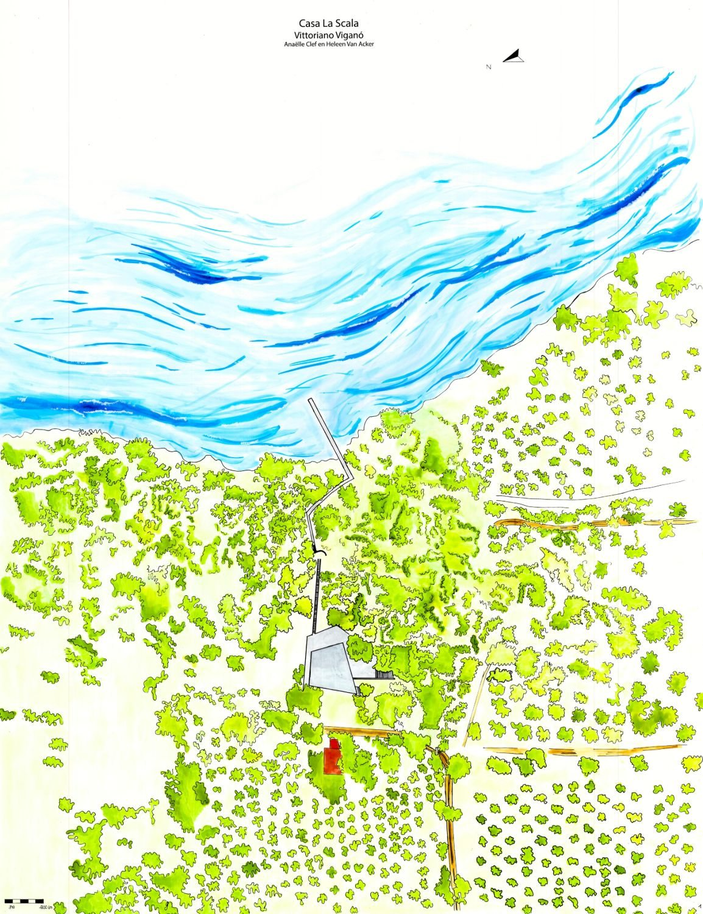
      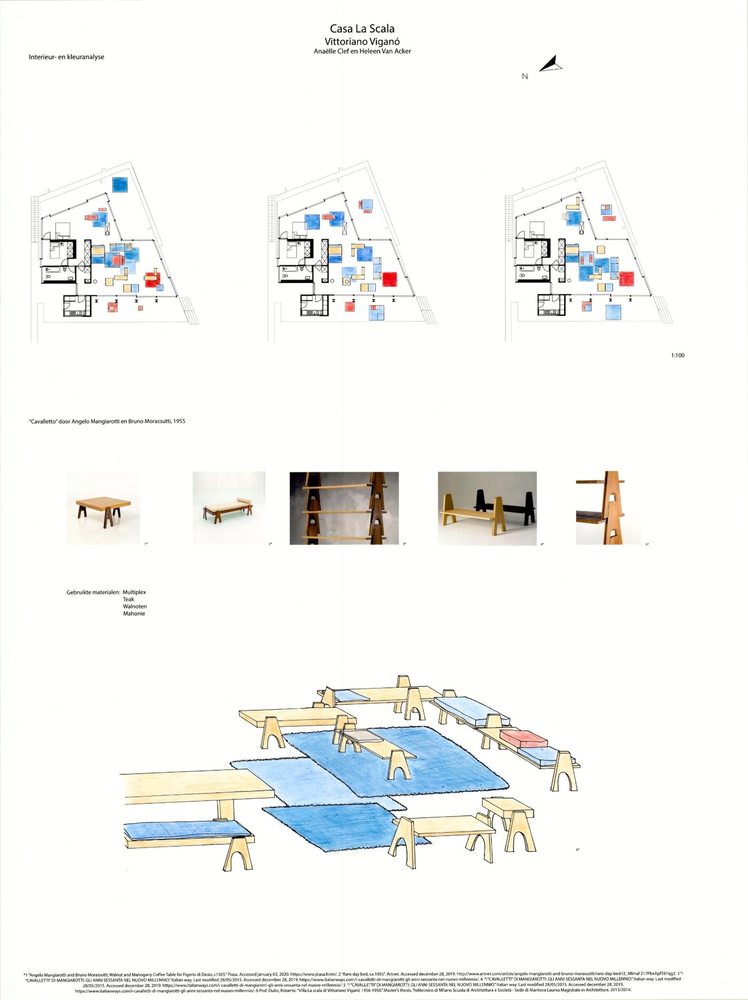
      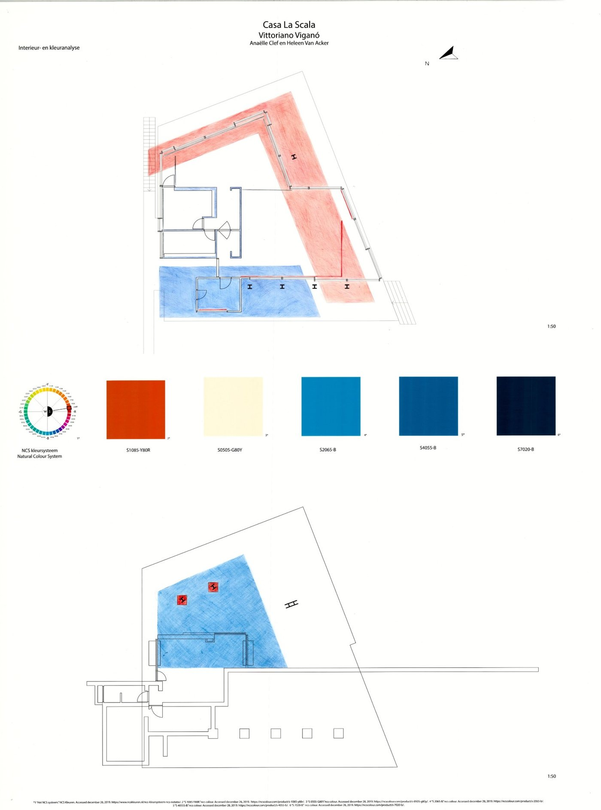
      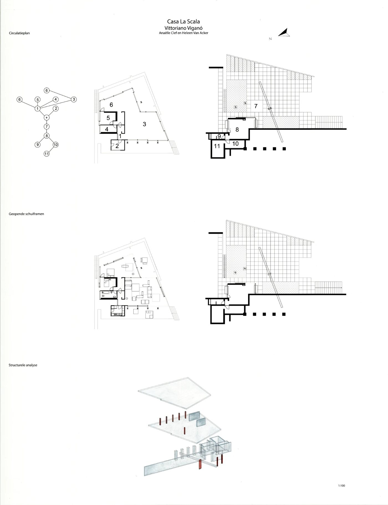
      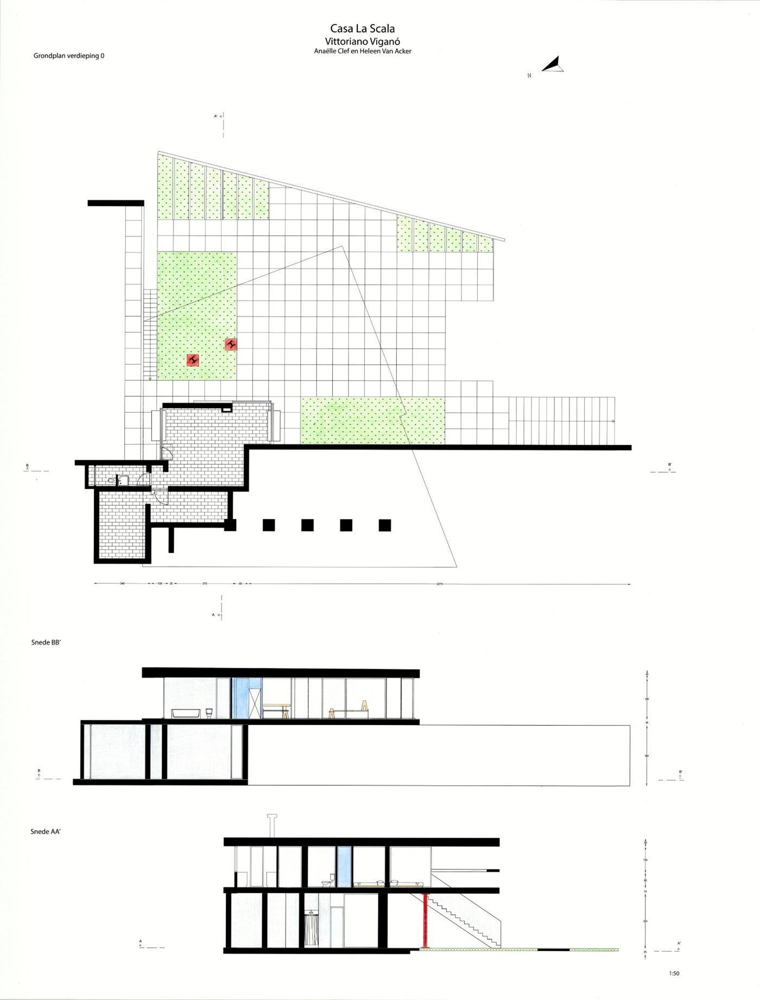
      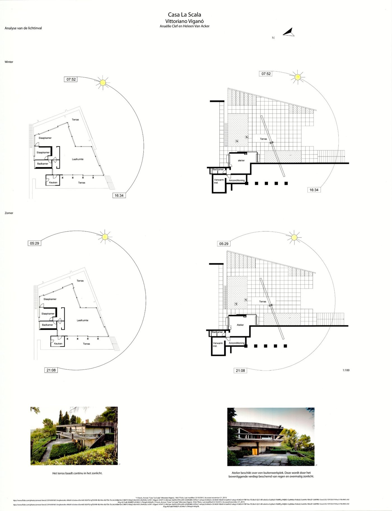
      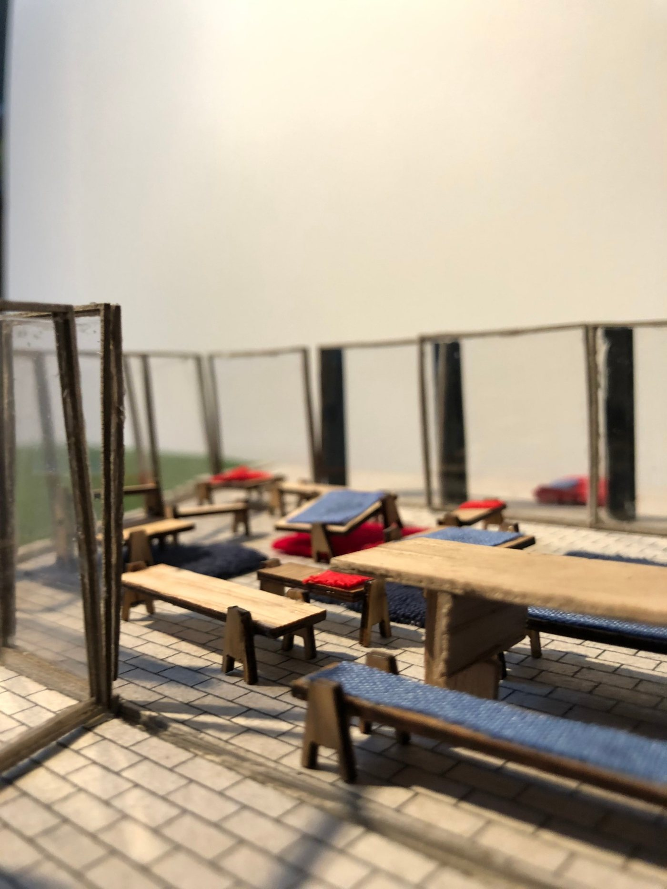
      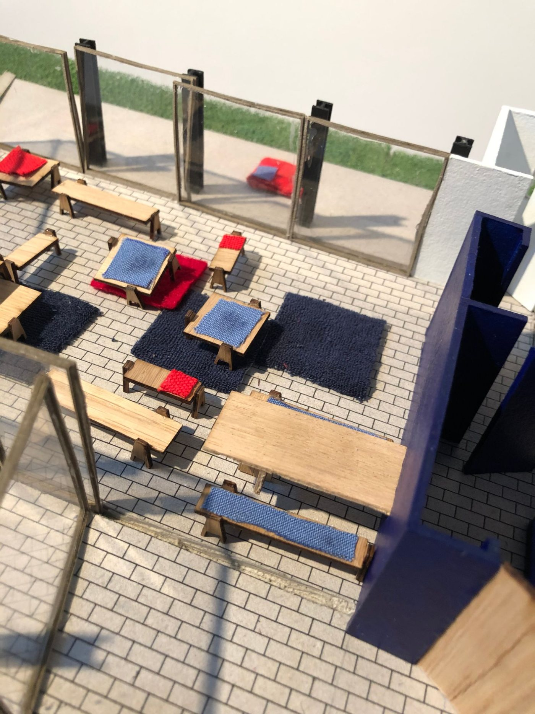
      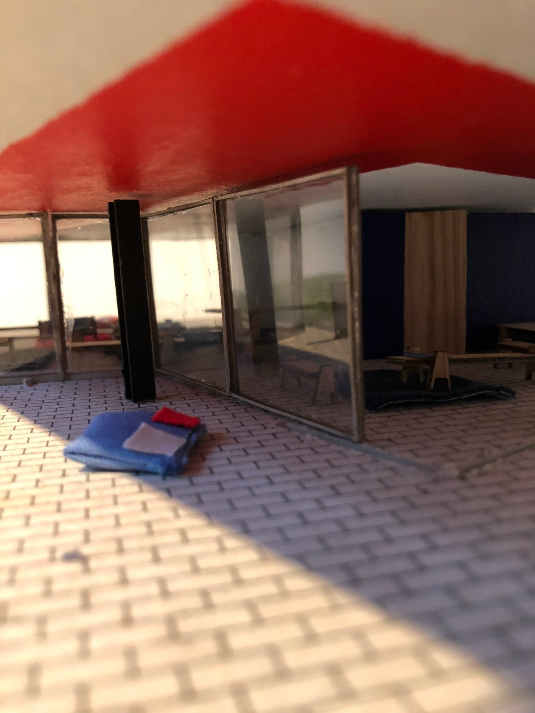
    </div>
    <p>In collaboration with Heleen Van Acker</p>
  </div><div class="sub">
    <div class="sub__top">
      <span class="no">02</span>
      <h2>The Edge of Living</h2>
      <span class="cat">Studio Project</span>
    </div>
    <div class="sub__split">
    <div>
    <p class="sub__lede">Only a sailor's knot as a connection to society — architect of your own life.</p>
    <p>The cargo ship is a continuously changing object and, in itself, essentially a permanent worksite. Steel plates are welded on where necessary to ensure its quality. It can be compared to a human being — something that is never complete and always leaves room for improvement; something that allows bad traits to be hidden behind a new, good one. I believe that we, as humans, are constantly evolving: every new encounter, experience, job and emotion contributes to who we are. As long as we live, we experience and continue to take shape each day. The human as a worksite, the worksite as a cargo ship, the cargo ship as a human. Because I have learned so much from visiting boats, I decided to showcase living on a boat. Just like Luc Deleu with his floating U.I.A., I introduce an educational aspect to my design: visitors can temporarily stay on the boat or take part in ongoing activities. By incorporating public restrooms and installations, I want to welcome people aboard. The boat has a kitchen, two restrooms, a bathroom, a bedroom and an outdoor space, just like a traditional home.</p>
    </div>
    <div class="carousel carousel--plain" data-carousel>
      <div class="carousel__count"><b>1</b> / 11</div>
      <div class="carousel__track"><div class="carousel__slide" style="background-image:url('images/university/edge-01.jpg')"></div><div class="carousel__slide" style="background-image:url('images/university/edge-02.jpg')"></div><div class="carousel__slide" style="background-image:url('images/university/edge-03.jpg')"></div><div class="carousel__slide" style="background-image:url('images/university/edge-04.jpg')"></div><div class="carousel__slide" style="background-image:url('images/university/edge-05.jpg')"></div><div class="carousel__slide" style="background-image:url('images/university/edge-06.jpg')"></div><div class="carousel__slide" style="background-image:url('images/university/edge-07.jpg')"></div><div class="carousel__slide" style="background-image:url('images/university/edge-08.jpg')"></div><div class="carousel__slide" style="background-image:url('images/university/edge-10.jpg')"></div><div class="carousel__slide" style="background-image:url('images/university/edge-12.jpg')"></div><div class="carousel__slide" style="background-image:url('images/university/edge-13.jpg')"></div></div>
      <button class="carousel__btn prev" aria-label="Previous">&larr;</button>
      <button class="carousel__btn next" aria-label="Next">&rarr;</button>
      <div class="carousel__dots"><button aria-label="Show image 1"></button><button aria-label="Show image 2"></button><button aria-label="Show image 3"></button><button aria-label="Show image 4"></button><button aria-label="Show image 5"></button><button aria-label="Show image 6"></button><button aria-label="Show image 7"></button><button aria-label="Show image 8"></button><button aria-label="Show image 9"></button><button aria-label="Show image 10"></button><button aria-label="Show image 11"></button></div>
    </div>
    </div>
  </div><div class="sub">
    <div class="sub__top">
      <span class="no">03</span>
      <h2>Public Seating</h2>
      <span class="cat">Public Space</span>
    </div>
    <p class="sub__lede">Prinsenhof — Ghent.</p>
    <div class="epi-row"><div class="epi-row__img">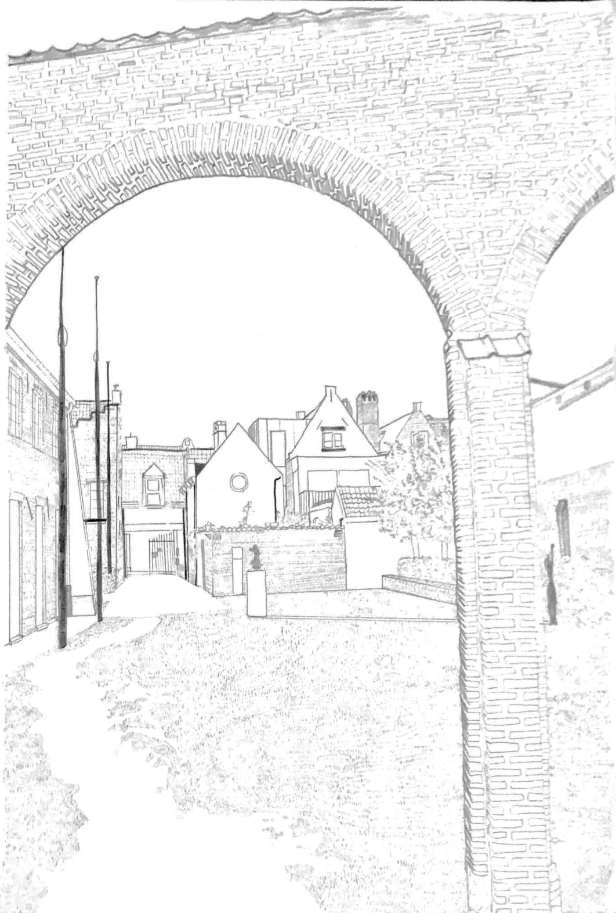</div><blockquote class="sub__epi">Dear terroir,<br>Through this way, I would like to thank you.<br>Thank you for being so changeable.<br>Thank you for being so receptive.<br>Thank you for being a place of gathering.<br>Thank you for letting me explore here.<br>Thank you for inspiring.<br>Thank you for preserving a piece of history.<br>Thank you for providing culture.<br>Thank you for letting me work here.<br>Once again, thank you, and see you soon.<br>Kind regards,<br>Anaëlle</blockquote></div>
    <p>Here you see the models of two different public squares that have been redesigned. During the site analysis, it immediately struck me that these spaces had many assets but were only being used as transit areas. By implementing various architectural interventions at the location, I aim to create a place for interaction and gathering.</p>
    <div class="sub__center">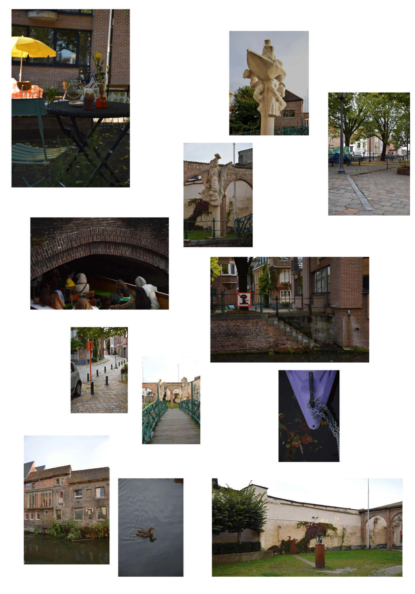</div>
  </div><div class="sub">
    <div class="sub__top">
      <span class="no">04</span>
      <h2>Western Cemetery Portal</h2>
      <span class="cat">Public / Social</span>
    </div>
    <p class="sub__lede">A manifesto to make the portal of the Western Cemetery part of the public space — breaking the taboo surrounding cemeteries through architecture.</p>
    <div class="sub__split sub__split--top">
    <div>
    <p>The cemetery is increasingly seen and used as a park, where people come to walk, cycle and picnic. It features a large entrance portal, only a small part of which is currently used for reception and administrative staff. The receptionist told me the main entrance will be relocated to Leliestraat to make part of the cemetery car-free; just behind the portal lies a green open space where children can play and cycle. For safety reasons, the entrance is being moved.</p><p>As a result, the portal will be left vacant. I propose a new use for it that addresses the needs of residents, creating space for social cohesion in the neighbourhood. The active social organisations already in the area point to a very engaged network, and my aim is to support it from a spatial perspective. The design focuses on the entrance portal and the driveway leading up to it, within an environment that honours and respects the various emotions present on the site — so that people with different motivations can express their wishes and feelings without hindering, or feeling hindered by, one another.</p><p>The left side of the portal is set up as a toy library — a place for lending toys. Many young children in the neighbourhood grow up in families with limited means, and by lending rather than selling, an affordable alternative can be offered. The toy library also includes an orangery, a space where children can play with the toys before taking them home.</p>
    </div>
    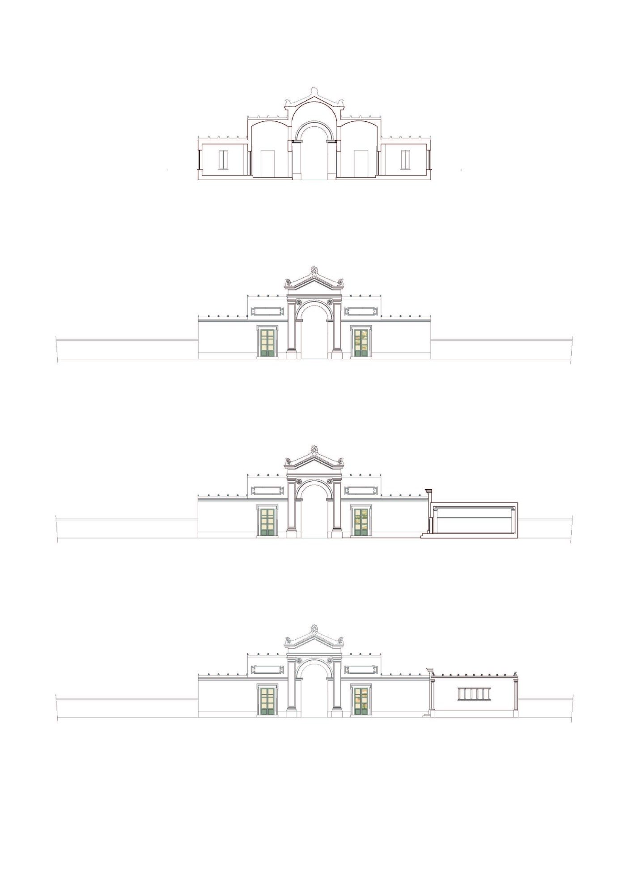
    </div>
    <div class="imggrid">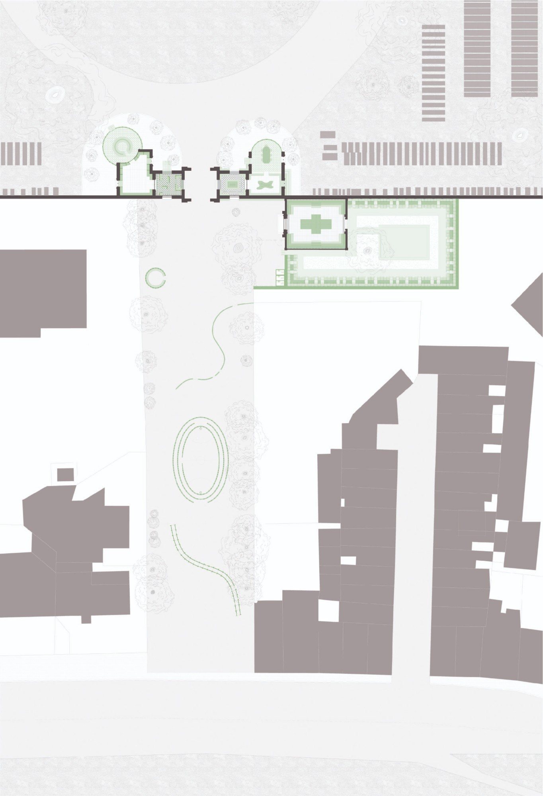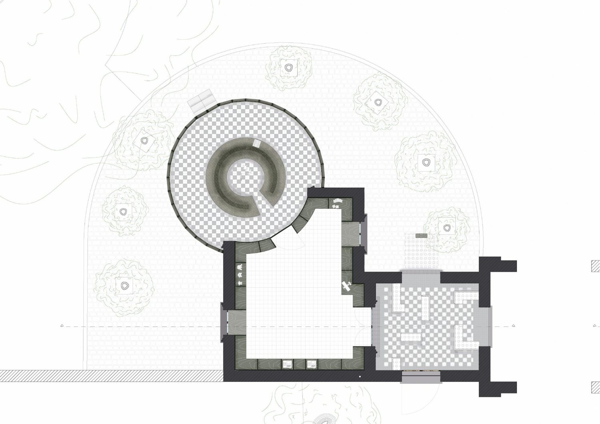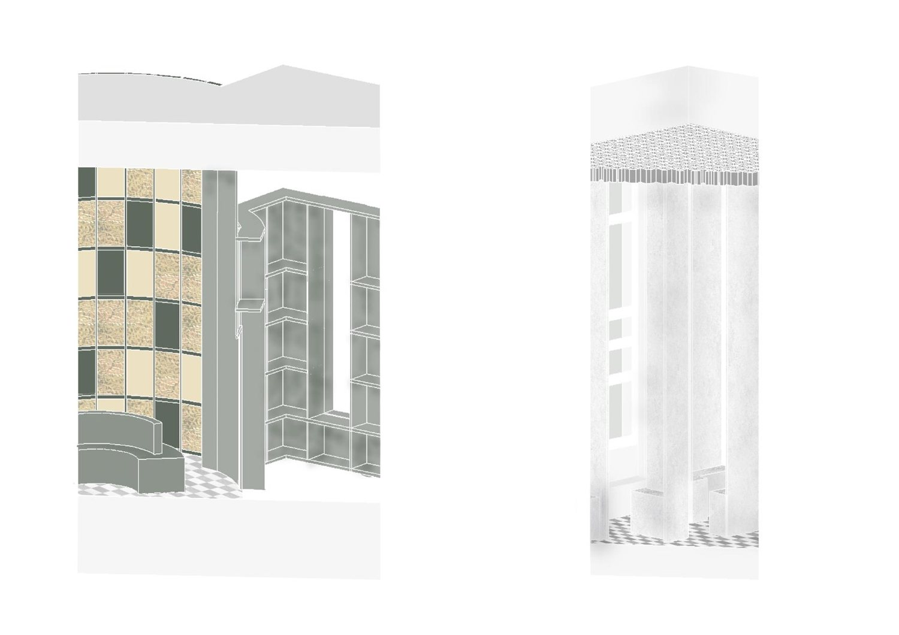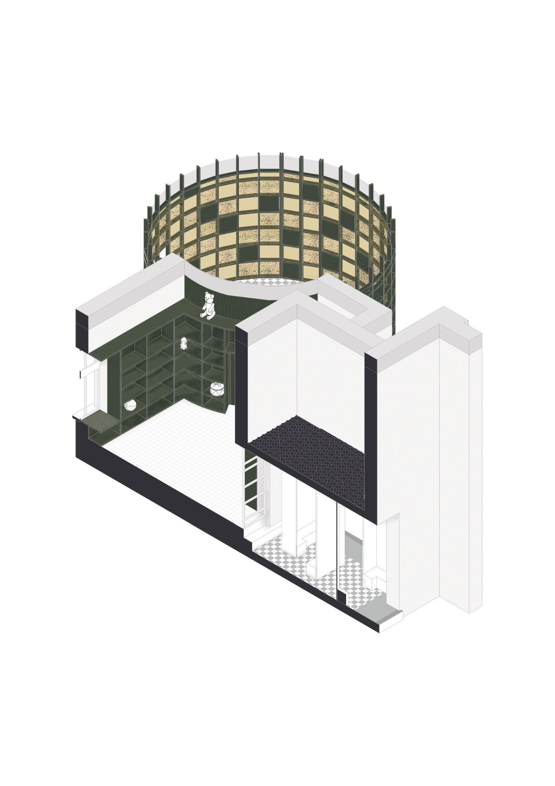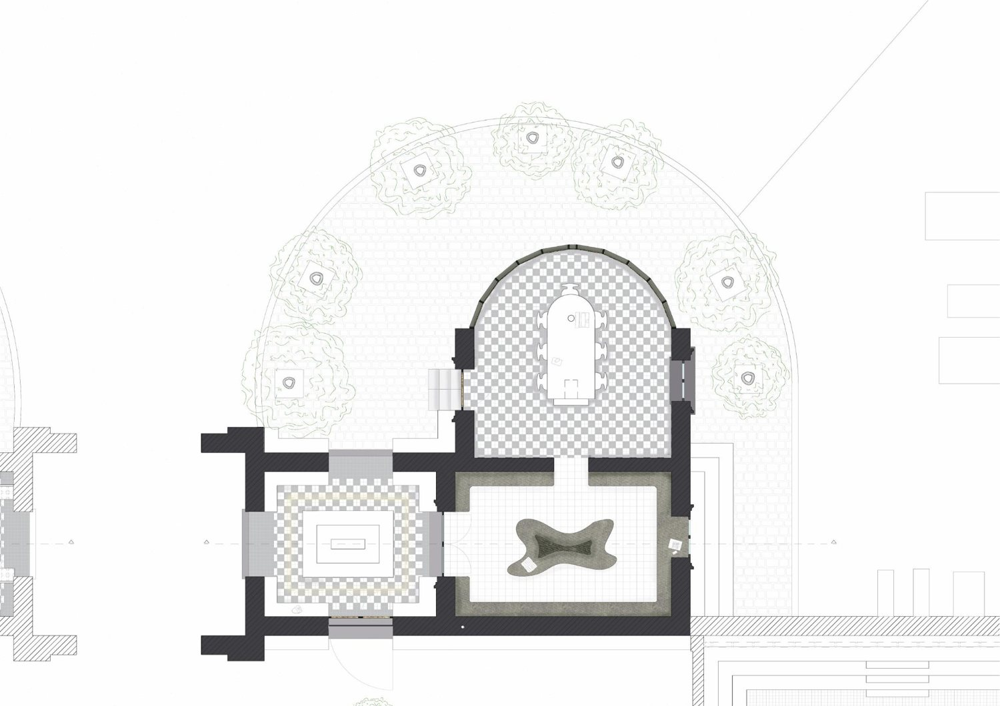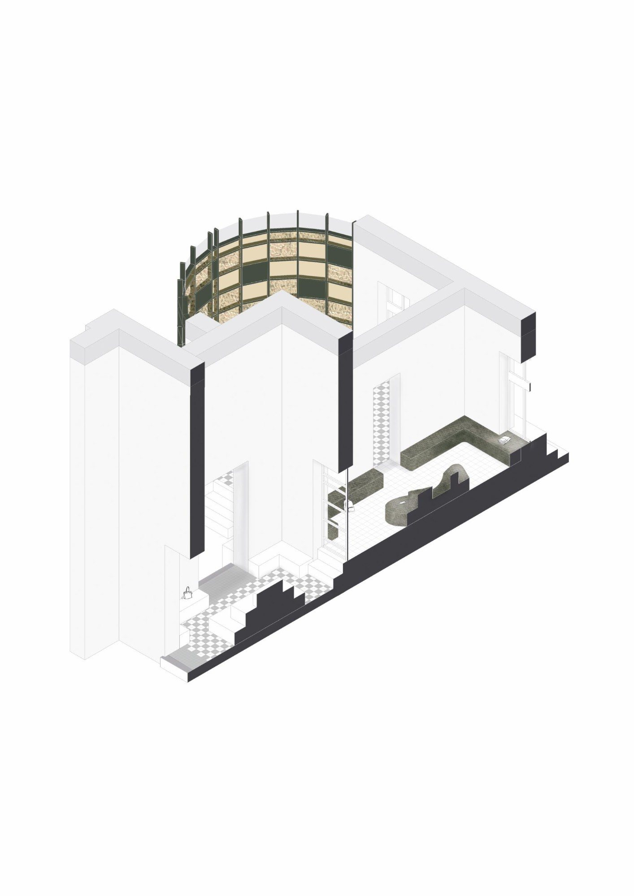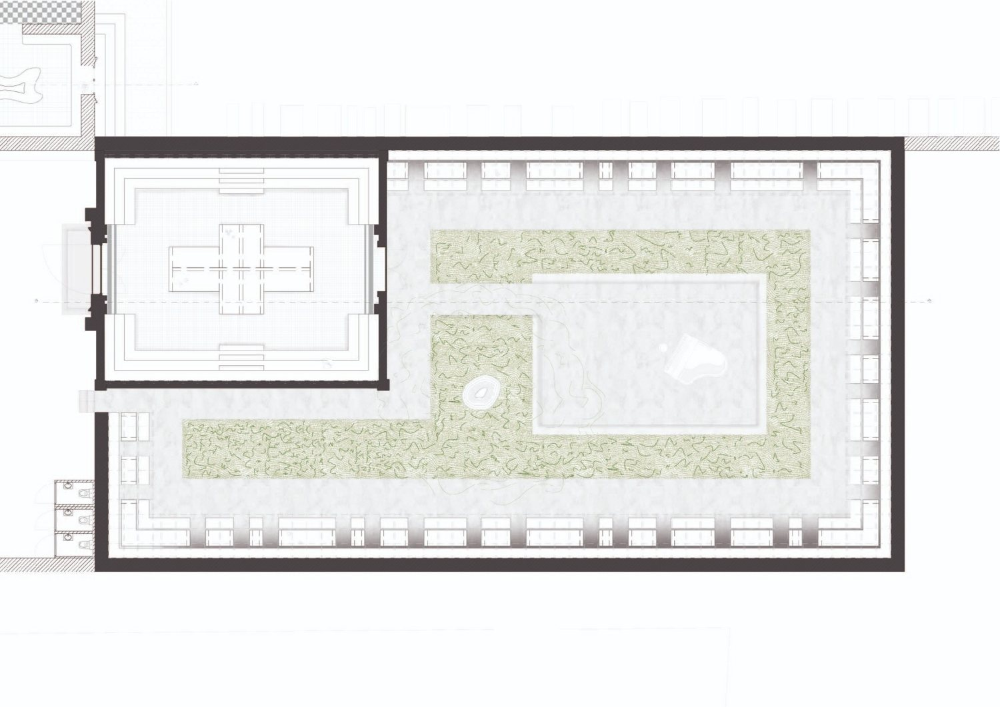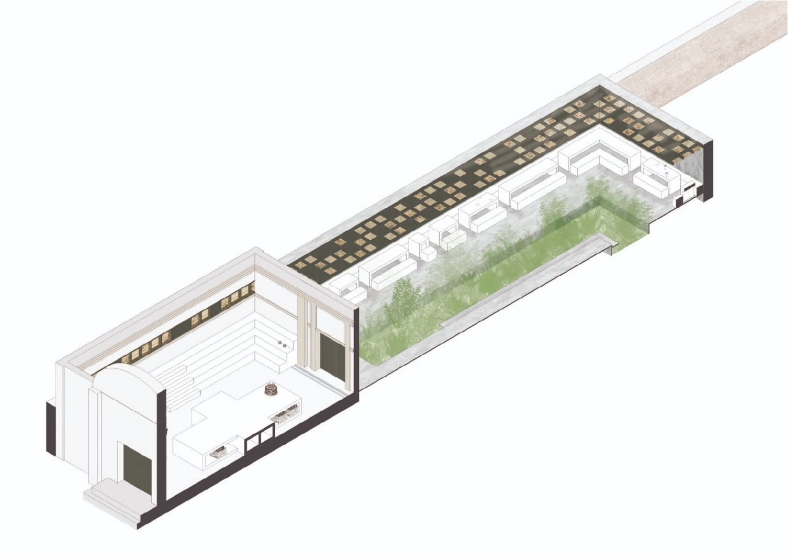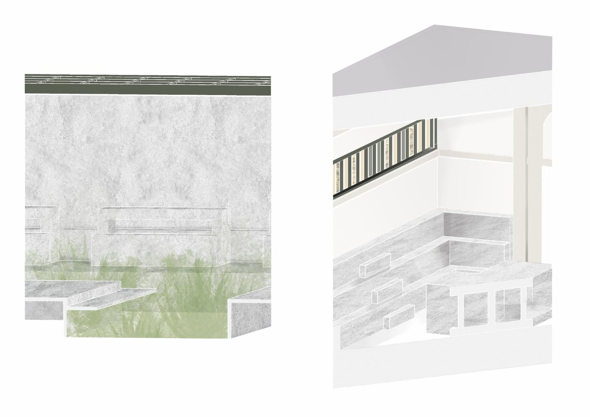</div>
  </div>
</section>

<nav class="pnext">
  <div><span class="u-label">Next project</span></div>
  <a href="private.html"><span class="nx">Private Projects</span><span style="font-size:28px;">&rarr;</span></a>
</nav>

<footer class="foot">
  <span>Anaëlle Clef — Master Interior Architect · Portfolio © 2026</span>
  <span><a href="mailto:anaelle.clef@hotmail.com">anaelle.clef@hotmail.com</a> · <a href="https://www.linkedin.com/in/anaelleclef/">LinkedIn</a></span>
</footer>

<script>
(function(){
  document.querySelectorAll('[data-carousel]').forEach(function(c){
    var track=c.querySelector('.carousel__track');
    var slides=c.querySelectorAll('.carousel__slide');
    var dots=c.querySelectorAll('.carousel__dots button');
    var count=c.querySelector('.carousel__count b');
    var i=0,n=slides.length,timer,reduce=window.matchMedia('(prefers-reduced-motion: reduce)').matches;
    function go(k){i=(k+n)%n;track.style.transform='translateX(-'+(i*100)+'%)';
      dots.forEach(function(d,j){d.classList.toggle('active',j===i);});
      if(count)count.textContent=(i+1);}
    function reset(){clearInterval(timer);if(!reduce)timer=setInterval(function(){go(i+1);},4500);}
    c.querySelector('.next').addEventListener('click',function(){go(i+1);reset();});
    c.querySelector('.prev').addEventListener('click',function(){go(i-1);reset();});
    dots.forEach(function(d,j){d.addEventListener('click',function(){go(j);reset();});});
    var x0=null;
    c.addEventListener('touchstart',function(e){x0=e.touches[0].clientX;},{passive:true});
    c.addEventListener('touchend',function(e){if(x0===null)return;var dx=e.changedTouches[0].clientX-x0;
      if(Math.abs(dx)>40){go(dx<0?i+1:i-1);reset();}x0=null;});
    go(0);reset();
  });
})();
</script>